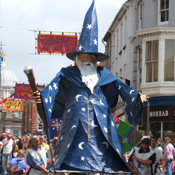

Annual Events in Penzance & West Cornwall
West Cornwall plays host to thousands of events over the course of a year, far too many for us to be able to list on a single page.
As such we are pleased to announce our sister website, West Cornwall Events. Here you can find plenty of the areas best events in a simple and easy to read format with no fuss or frills. The site is completely free to use and free to submit events too.
Visit West Cornwall Events for more information.
April
Visit West Cornwall Events.
Trereife Easter Food and Craft Fair
Trereife House is looking forward to hosting a unique Easter Bank Holiday Food and Craft Fair. Cookery demonstrations by local chefs, fascinating tours of Trereife House, a delectable selection of locally produced food and drink, exquisite art and crafts to browse and buy, children’s entertainment and live music performances… these are just a handful of the attractions to be found at Trereife’s Easter Fair on Saturday 3rd to Monday 5th April.
May
Helston Flora Day
Colourful dancing through the streets. The Floral Dance always takes place on the 8th of May and the first dance takes place at 7am. The Hal-An-Tow (a story and dance by costumed performers) takes place at 8.30am. A Children's Dance at 9am.The streets and houses of Helston are specially decorated for the day. For the Midday Dance the men wear top hats and morning suits while the women wear elegant long dresses. There is an Evening Dance at 5pm.
June
The Golowan Festival
The Golowan festival (Cornish for midsummer) is the festival of St John held in Penzance each year in late June.
Events this year include fireworks display on the prom, spectacular parades through the streets and a host of street entertainment. There is plenty of live performances happening in 2009 including music from local artists, poetry reading, on stage shows in the Acorn and plenty more. You can get involved via the workshops held by the Golowan Group.
Find out more information about The Golowan Festival & Mazey Day
July
Lafrowda Day
The roads are closed, the decorations go up and St. Just gets into party mood for Lafrowda Day There's live music, street entertainers and three magnificent processions - the children at noon, big images in the afternoon and lanterns after dark. The highlight of a week-long community arts festival, the day is showcase for the Work of the Lafrowda Trust. Schools, community Groups and individuals get involved in a great day out for all the family.
August
Fine Food, Art and Craft Fair - Trereife Gardens
A celebration of the finest Food, Art and Craft from around West Cornwall. Entertainment and refreshments throughout the weekend.
Hidden Art Design Fair - Trereife Gardens
The best of the county's design and craft skills will be on show at the annual Hidden Art event this weekend.
Country Fair - Trereife Gardens
Attractions such as a Heavy Horse display, Horse and Hound show, Falconry display, Companion Dog Show, Ferret racing, Bilbo the life saving dog, Vintage vehicle show, Cornish Wrestling, children’s rides, pottery, wood and metal demonstrations, Jazz and acoustic performers
Party in the Park - Trereife Park, nr Newlyn
This stunning venue is the setting for an annul music event. Party In The Park is all about the best local bands playing in front of the best crowd, all under one roof! The event is being held under cover in marquees within the beautiful and historic grounds of Trereife Park, 1/2 mile west of Penzance on the A30 Lands End road. £7 on the door.2pm to midnight.
The Newlyn Fish Festival
Visitors will be able to enjoy a wide selection of Seafood, Cooking Demonstrations, Children’s Workshops, Fish Auctions, Open Vessels, Craft, Art and Trade stalls together with a full programme of Music and Harbour Entertainments including Gig Racing, Naval War Ships, Helicopters, The Penlee Lifeboat, the Camborne Youth Band and much more besides!
September
St Ives September Festival
St Ives plays host to St Ives September Festival, a major two week celebration of music and the arts, bringing together a range of international artists from around the world. The festival covers a wide range of interests. African, Indian, ska, reggae, folk, rock, contemporary and classical music are all represented and there’s a wide variety of talks, films, poetry and literature plus open studios throughout the town.
December
The Montol Festival
The Montol Festival is an annual arts and community festival in Penzance, Cornwall held between the 14th and 22nd of December each year. The festival is a revival and reinterpretation of many of the traditional Cornish midwinter traditions & Christmas traditions formerly practiced in and around the Penzance area and is organised by the same team as the modern Golowan Festival.
23rd - Tom Bawcocks Eve - Mousehole
Tom Bawcocks Eve is a festival held on the 23rd of December in Mousehole. The festival is held in celebration and memorial of the efforts of Mousehole resident Tom Bawcock to lift a famine from the village. During this festival Star Gazy pie (a mixed fish, egg and potato pie with protruding fish heads) is eaten and depending on the year of celebration a lantern procession takes place.